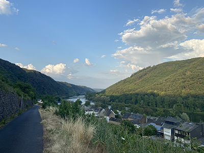

Cochem, Duitsland
Afgelopen zomer ben ik in Cochem geweest, dit is een plaatsje aan de rivier de moezel. Wij waren in de buurt van Cochem zijn verbleven, in een dorpje genaamd Klotten, waar wij bij een lieve vrouw, die een appartement verhuurde mochten slapen. Tijdens dit verblijf hebben wij een aantal excursies gedaan, je kan daar veel wandelen en door de bergen lopen. Vergeet je wanderschoenen niet Als je Cochem zelf ingaat kan je lekker schoppen bij lokale winkeltjes. Het is echt een aanrader om daar tot rust te komen, je kan er goed aan de rivier zitten en even lekker wegdwalen in je gedachten. Verder zijn er ook veel leuke activiteiten daar te doen, maar hiervoor moet je wel in bezit zijn van een auto of heel veel zin hebben om lange einden te fietsen, want anders is er niet zoveel aan.
